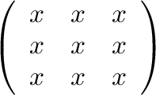

Tensors are arrays of data, where the rank of the tensor tells how many dimensions the data has. A single number (a scalar) has a tensor of rank 0. A tensor of rank 1 is a column or row of numbers—a vector. A rank 2 tensor appears is a 2D sequence of numbers (a matrix), for example:

A tensor of rank 3 will appear as a three-dimensional cube, rank 4 as a four-dimensional hypercube, and so on. Tensor variables can be created and used in Minsky, but power analysis of multidimensional data requires the installation of Ravel.